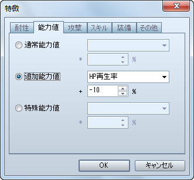
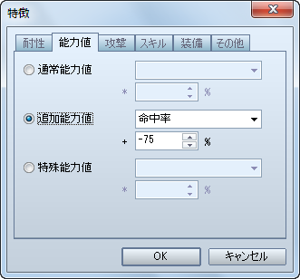
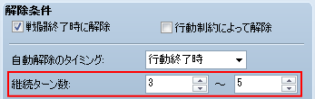

魔法関係度（VX では「精神関係度」）が 1 以上のスキルを使用出来なくするステートの設定方法です。
［ステート］特徴 − スキル − スキルタイプ封印
コマンド入力を受け付けず、さらに敵からの攻撃を回避することが出来ないステートを作成する場合、VX Ace では「行動ができない」設定と「回避ができない」設定をそれぞれ行うことになります。
［ステート］基本設定 − 行動制約 − 行動できない

［ステート］特徴 − 能力値 − 追加能力値 − 回避率

攻撃力などの能力値を変化させたい場合の設定方法です。
［ステート］特徴 − 能力値 − 通常能力値

必ずこのステートにしたい場合は、このステートを付加するスキル（アイテム）側で設定を行います。
［スキル / アイテム］発動 − 命中タイプ − 必中

［スキル / アイテム］使用効果 − ステート − ステート付加

VX Ace では設定出来ません。
その代わり、スキル（アイテム）の［使用効果］に［能力強化］、［能力弱体］を設定すると、［逆効果と相殺］とほぼ同様の効果が得られます。例えば、防御力が強化されている対象に防御力を弱体するスキル（アイテム）を使用すると、防御力強化が打ち消され、対象は強化されていない元の状態になります。

マップを移動したり、戦闘中にターンが経過したりすると HP が減るステートを作成したい場合の設定方法です。
［ステート］特徴 − 能力値 − 追加能力値 − HP再生率

物理攻撃の命中率を下げるステートを作成したい場合の設定方法です。
［ステート］特徴 − 能力値 − 追加能力値 − 命中率

VX Ace では、ステートが解除される最短ターンと最長ターンを設定するように仕様が変更されています。ですので、解除される確率を考慮した上で、解除される最短ターンと最長ターンに幅を持たせるようにしてください。

該当する属性を伴う攻撃によるダメージを半減させるステートを作成したい場合の設定方法です。
［ステート］特徴 − 耐性 − 属性有効度

VX Ace では設定出来ません。